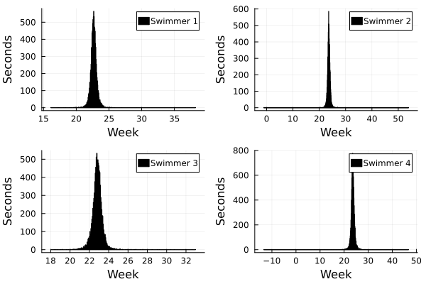
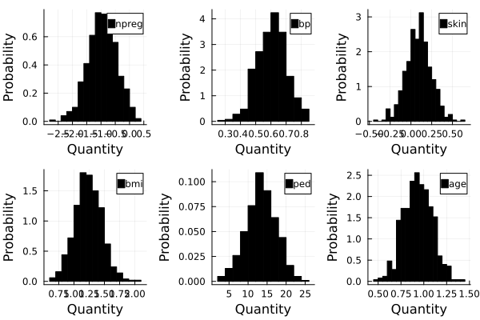
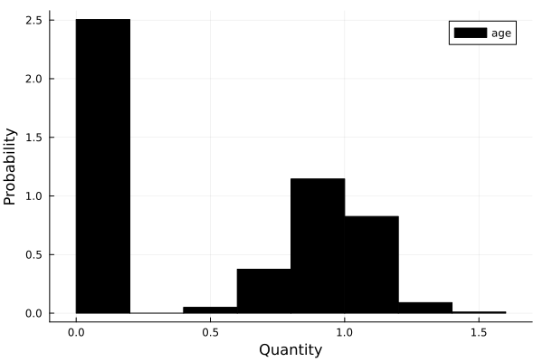

Activating project at `~/Documents/GitHub/STAT638_Applied-Bayes-Methods/hw/hw9`
Random.TaskLocalRNG()
13.2 Description
Course: STAT638, 2022 Fall
Deadline: 2022/11/17, 12:00 pm
Read Chapter 9 in the Hoff book. Then do Problems 9.1 and 9.2 in Hoff.
For both regression models, please include an intercept term (\(\beta_0\)).
In 9.1(b), please replace “max” by “min”. (This is not listed in the official book errata, but appears to be a typo.)
For 9.2, the azdiabetes.dat data are described in Exercise 6 of Chapter 7 (see errata).
Note: This PDF file is generated by Quarto and LualaTeX. There is unsolved problem to display the special character in the source code. Thus, I leave the html version here for reference that displays the complete source code:
Extrapolation: The file swim.dat contains data on the amount of time in seconds, it takes each of four high school swimmers to swim \(50\) yards. Each swimmer has \(6\) times, taken on a biweekly basis.
13.3.1 (a)
Perform the following data analysis for each swimmer separately:
Fit a linear regression model of swimming time as the response and week as the explanatory variable. To formulate your prior, use the information that competitive times for this age group generally range from \(22\) to \(24\) seconds.
For each swimmer \(j\), obtain a posterior predictive distribution for \(Y^{*}_j\), their time if they were to swim \(2\) weeks from the last recorded time.
"""Problem 9.1 (a)"""@protostruct SwimmingModel S =1000# Number of sampling# Data y n =length(y) # number of records# Model X =hcat( ones(n), collect(0:2:10) ) p =size(X)[2]# Prior β₀ =MvNormal([23., 0.], [0.10; 00.1]) ν₀ =1. σ₀² =0.2endfunctionSSR(β, y, X) ssrV = (y - X*β)' * (y - X*β)returnsum(ssrV)endfunctionβ_FCD(σ², m::SwimmingModel) Σₙ =( m.β₀.Σ^-1+ m.X'* m.X / σ²)^-1 μₙ =Σₙ*(m.β₀.Σ^-1* m.β₀.μ + m.X'* m.y / σ²)returnMvNormal(vec(μₙ), Hermitian(Σₙ))endfunctionσ²_FCD(β, m::SwimmingModel) α = (m.ν₀ + m.n)/2 θ = (m.ν₀*m.σ₀²) +SSR(β, m.y, m.X)returnInverseGamma(α, θ)endfunctionpred(X, m::SwimmingModel)# Sampling vector βsmp =zeros(m.S, length(m.β₀.μ)) σ²smp =zeros(m.S) y =zeros(m.S)# Init βsmp[1,:] =rand(m.β₀) σ²smp[1] = m.σ₀² y[1] = m.y[1]for i in2:m.S βsmp[i,:] =rand(β_FCD(σ²smp[i-1], m)) σ²smp[i] =rand(σ²_FCD(βsmp[i-1,:], m))# Predict y[i] = βsmp[i,:]' * X + rand(Normal(0., σ²smp[i]))endreturn (y=y, β=βsmp, σ²=σ²smp)endj_swim =1ms = [ SwimmingModel(y =hcat(ys[i,:]), S=10000 ) for i in1:size(ys)[1] ]ys_pred =zeros(size(ys)[1], ms[1].S) X_pred = [1,12]for i ineachindex(ms) ys_pred[i,:] =pred([1,12], ms[i]).yend## Plottingp = [histogram(ys_pred[i,:], label="Swimmer $i", color="black", xlabel="Week", ylabel="Seconds" ) for i in1:size(ys)[1]]plot(p...)

13.3.2 (b)
The coach of the team has to decide which of the four swimmers will compete in a swimming meet in \(2\) weeks. Using your predictive distributions, compute \(Pr(Y^{*}_{j} = \max\{Y^{*}_1,\dots, Y^{*}_4\}|Y)\) for each swimmer \(j\), and based on this make a recommendation to the coach.
am =argmax(ys_pred, dims=1)y_count =zeros(1, size(ys)[1])for a in am y_count[a[1]] +=1endpmax =vec(y_count ./length(am))## Recommendationds =DataFrame( Dict("Swimmer"=>collect(1:size(ys)[1]),"Pr(Y_i is max)"=> pmax ))
4×2 DataFrame
Row
Pr(Y_i is max)
Swimmer
Float64
Int64
1
0.023
1
2
0.4773
2
3
0.0424
3
4
0.4573
4
Swimmer 2 is the most probable winner.
13.4 Problem 9.2
Model selection: As described in Example 6 of Chapter 7, the file azdiabetes.dat contains data on health-related variables of a population of \(532\) women. In this exercise we will be modeling the conditional distribution of glucose level (glu) as a linear combination of the other variables, excluding the variable diabetes.
13.4.1 (a)
Fit a regression model using the \(g\)-prior with \(g=n\), \(\nu_0 =2\) and \(\sigma^{2}_{0} = 1\). Obtain posterior confidence intervals for all of the parameters.
dt = data[1:end , 1:end-1]y =float.(dt[2:end, 2])X =float.(dt[2:end, 1:end.!=2])ns = data[1,1:end-1]ns = ns[1:end.!=2]@protostruct DiabetesModel S =500# Number of sampling# Data y X n =length(y) # number of records p =size(X)[2]# Model # Prior g = n # g prior ν₀ =2. σ₀² =1.endfunctionβ_FCD(σ², m::DiabetesModel)returnβ_FCD(σ², m.g, m.X, m.y)endfunctionβ_FCD(σ², g, X, y) Σₙ = g/(g+1) * σ² * (X'X)^-1 μₙ = g/(g+1) *β̂(σ², y, X) βₙ =MvNormal(μₙ, Hermitian(Σₙ))return βₙ endfunctionβ̂(σ², y, X)return σ² * (X'X)^-1* (X'y / σ²)endfunctionσ²_FCD(m::DiabetesModel)returnσ²_FCD(m.ν₀, m.σ₀², m.n, m.X, m.y, m.g)endfunctionσ²_FCD(ν₀, σ₀², n, X, y, g) α = ν₀ + n /2. θ = (ν₀ * σ₀² +SSR(X, y, g))/2. σ² =InverseGamma(α, θ)return σ²endfunctionSSR(m::DiabetesModel)returnSSR(m.X, m.y, m.g)endfunctionSSR(X, y, g)return y'*(I - g/(g+1)*X*(X'X)^-1*X')*yendm =DiabetesModel(y=y, X=X )σ²smp =zeros(m.S, 1)βsmp =zeros(m.S, size(m.X)[2])for i in1: m.S σ²smp[i] =rand(σ²_FCD(m)) βsmp[i,:] =rand(β_FCD(σ²smp[i], m))endps = [histogram(βsmp[:,i], xlabel="Quantity", ylabel="Probability",normalize=true, label="$(ns[i])", color="black") for i in1:m.p]plot(ps...)

13.4.2 (b)
Perform the model selection and averaging procedure described in Section 9.3. Obtain \(Pr(\beta_j \neq 0 |y)\), as well as posterior confidence intervals for all of the parameters. Compare to the results in part (a).
\[\{y|X_{z(k)},\beta_{z(k)}, \sigma^2\} \sim \text{ multivariate normal }(X_{z(k)}\beta_{z(k)}, \sigma^2 I)\]
inds = prB .>=0.5b_select = prB[inds]ps = [histogram(βsmp[:, i], xlabel="Quantity", ylabel="Probability",normalize=true, label="$(ns[i])", color="black") for i infindall(inds .==1)]plot(ps...)

DataFrame(Dict("Parameters"=> ns[inds], "Confidence interval"=> [quantile(βsmp[:,i], [0.25, 0.975]) for i infindall(inds .==1)]))
1×2 DataFrame
Row
Confidence interval
Parameters
Array…
Any
1
[0.0, 1.1847]
age
Conclusion
There might be some bugs in FCD formulation. The current results show that all the features are equally important after model selection. The distribution is far different from what it is in part (a).
Source Code
---title: "Homework 9"author: - name: Shao-Ting Chiu (UIN:433002162) url: stchiu@email.tamu.edu affiliation: Department of Electrical and Computer Engineering, Texas A\&M Universitydate: todaybibliography: ../ref.bibformat: html: table-of-contents: true keep-ipynb: true pdf: table-of-contents: true tex-engine: lualatexjupyter: julia-1.8execute: echo: true freeze: auto---## Computational Environment``` {julia}using PkgPkg.activate("hw9")using Distributionsusing DataFramesusing Plotsusing DelimitedFilesusing LinearAlgebrausing Statisticsusing ProtoStructsusing CSVimport RandomRandom.seed!(2022)```## Description- Course: STAT638, 2022 Fall- Deadline: 2022/11/17, 12:00 pm> Read Chapter 9 in the Hoff book. Then do Problems 9.1 and 9.2 in Hoff.> > For both regression models, please include an intercept term ($\beta_0$).> > In 9.1(b), please replace "max" by "min". (This is not listed in the official book errata, but appears to be a typo.)> > For 9.2, the azdiabetes.dat data are described in *Exercise* 6 of Chapter 7 (see errata).- Note: This PDF file is generated by Quarto and LualaTeX. There is unsolved problem to display the special character in the source code. Thus, I leave the html version here for reference that displays the complete source code: > [https://stchiu.quarto.pub/stat_638_hw_9/](https://stchiu.quarto.pub/stat_638_hw_9/)## Problem 9.1> Extrapolation: The file `swim.dat` contains data on the amount of time in seconds, it takes each of four high school swimmers to swim $50$ yards. Each swimmer has $6$ times, taken on a biweekly basis.### (a)> Perform the following data analysis for each swimmer separately:> > 1. Fit a linear regression model of swimming time as the response and week as the explanatory variable. To formulate your prior, use the information that competitive times for this age group generally range from $22$ to $24$ seconds.> 2. For each swimmer $j$, obtain a posterior predictive distribution for $Y^{*}_j$, their time if they were to swim $2$ weeks from the last recorded time.- Suppose a linear model$$Y = X\beta + \epsilon$$$$Y_i = x_{i,1} \beta_1 + x_{i,2} \beta_2 + \epsilon_i$$- $Y = \begin{bmatrix} Y_1\\ \vdots\\ Y_6\end{bmatrix}$. A swimmer's record of $6$. Series in time- $X = \begin{bmatrix} x_{1,1} & x_{1,2}\\ \vdots & \vdots \\ x_{6,1} & x_{6,2} \end{bmatrix}$ - $x_{j,1}$:$j$th record with swim score in the range of 22 to 24 second - $x_{j,2}$: Weeks of training- $\beta = \begin{bmatrix} \beta_1 \\ \beta_2 \end{bmatrix}$. - $\mu_0 = \begin{bmatrix} 23\\ 0 \end{bmatrix}$ - The prior expectation of intercept of $y$ is $23$. - $\beta_0 \sim N_p(\mu_0, \Sigma_0)$. 1. FCD: $\beta|y, \sigma^2 \sim N_p(\beta_n, \Sigma_n)$ 1. $\Sigma^{-1}_{n} = \Sigma^{-1}_{0} + \frac{X^T X}{\sigma^2}$ 2. $\beta_n = \Sigma_n (\Sigma^{-1}_{0} \beta_0 + \frac{X^T y}{\sigma^2})$ **Prior setting**- $\Sigma_{0} = \begin{bmatrix} 0.1 & 0\\ 0 & 0.1 \end{bmatrix}$ - There is uncertainty about $\beta$ estimation. - Covariance of time and intersept is believe as $0$- $\sigma^2 \sim IG(\nu_0/2 , \nu_0 \sigma^{2}_0 /2)$ - FCD: $\sigma^2 |y,\beta \sim IG((\nu_0 + n)/2, (\nu_0\sigma^{2}_{0}) + SSR(\beta)/2)$- $SSR(\beta) = (y - X\beta)^T (y-X\beta)$``` {julia}ys = readdlm("data/swim.dat")`````` {julia}"""Problem 9.1 (a)"""@proto struct SwimmingModel S = 1000# Number of sampling# Data y n = length(y) # number of records# Model X = hcat( ones(n), collect(0:2:10) ) p = size(X)[2]# Prior β₀ = MvNormal([23., 0.], [0.10; 00.1]) ν₀ = 1. σ₀² = 0.2endfunction SSR(β, y, X) ssrV = (y - X*β)' * (y - X*β) return sum(ssrV)endfunction β_FCD(σ², m::SwimmingModel) Σₙ =( m.β₀.Σ^-1 + m.X'*m.X / σ²)^-1 μₙ = Σₙ*(m.β₀.Σ^-1*m.β₀.μ + m.X' * m.y / σ²) return MvNormal(vec(μₙ), Hermitian(Σₙ))endfunction σ²_FCD(β, m::SwimmingModel) α = (m.ν₀ + m.n)/2 θ = (m.ν₀*m.σ₀²) + SSR(β, m.y, m.X)return InverseGamma(α, θ)endfunction pred(X, m::SwimmingModel)# Sampling vector βsmp = zeros(m.S, length(m.β₀.μ)) σ²smp = zeros(m.S) y = zeros(m.S)# Init βsmp[1,:] = rand(m.β₀) σ²smp[1] = m.σ₀²y[1] = m.y[1] for i in 2:m.S βsmp[i,:] = rand(β_FCD(σ²smp[i-1], m)) σ²smp[i] = rand(σ²_FCD(βsmp[i-1,:], m))# Predict y[i] = βsmp[i,:]' * X + rand(Normal(0., σ²smp[i])) end return (y=y, β=βsmp, σ²=σ²smp)endj_swim = 1ms = [ SwimmingModel(y = hcat(ys[i,:]), S=10000 ) for i in 1:size(ys)[1] ]ys_pred = zeros(size(ys)[1], ms[1].S) X_pred = [1,12]for i in eachindex(ms) ys_pred[i,:] = pred([1,12], ms[i]).yend## Plottingp = [histogram(ys_pred[i,:], label="Swimmer $i", color="black", xlabel="Week", ylabel="Seconds" ) for i in 1:size(ys)[1]]plot(p...)```### (b)> The coach of the team has to decide which of the four swimmers will compete in a swimming meet in $2$ weeks. Using your predictive distributions, compute $Pr(Y^{*}_{j} = \max\{Y^{*}_1,\dots, Y^{*}_4\}|Y)$ for each swimmer $j$, and based on this make a recommendation to the coach.``` {julia}am = argmax(ys_pred, dims=1)y_count = zeros(1, size(ys)[1])for a in am y_count[a[1]] += 1endpmax = vec(y_count ./ length(am))## Recommendationds = DataFrame( Dict("Swimmer"=> collect(1:size(ys)[1]),"Pr(Y_i is max)" => pmax ))`````` {julia}#| echo: falseprint("Swimmer $(argmax(pmax)[1]) is the most probable winner.")```## Problem 9.2> Model selection: As described in Example 6 of Chapter 7, the file `azdiabetes.dat` contains data on health-related variables of a population of $532$ women. In this exercise we will be modeling the conditional distribution of glucose level (`glu`) as a linear combination of the other variables, excluding the variable `diabetes`.### (a)> Fit a regression model using the $g$-prior with $g=n$, $\nu_0 =2$ and $\sigma^{2}_{0} = 1$. Obtain posterior confidence intervals for all of the parameters.``` {julia}data = readdlm("data/azdiabetes.dat")`````` {julia}dt = data[1:end , 1:end-1]y = float.(dt[2:end, 2])X = float.(dt[2:end, 1:end .!= 2])ns = data[1,1:end-1]ns = ns[1:end .!=2]@proto struct DiabetesModel S = 500 # Number of sampling # Data y X n = length(y) # number of records p = size(X)[2] # Model # Prior g = n # g prior ν₀ = 2. σ₀² = 1.endfunction β_FCD(σ², m::DiabetesModel) return β_FCD(σ², m.g, m.X, m.y)endfunction β_FCD(σ², g, X, y) Σₙ = g/(g+1) * σ² * (X'X)^-1 μₙ = g/(g+1) * β̂(σ², y, X) βₙ = MvNormal(μₙ, Hermitian(Σₙ))return βₙ endfunction β̂(σ², y, X)return σ² * (X'X)^-1 * (X'y / σ²)endfunction σ²_FCD(m::DiabetesModel) return σ²_FCD(m.ν₀, m.σ₀², m.n, m.X, m.y, m.g)endfunction σ²_FCD(ν₀, σ₀², n, X, y, g) α = ν₀ + n /2. θ = (ν₀ * σ₀² + SSR(X, y, g))/2. σ² = InverseGamma(α, θ)return σ²endfunction SSR(m::DiabetesModel)return SSR(m.X, m.y, m.g)endfunction SSR(X, y, g) return y'*(I - g/(g+1)*X*(X'X)^-1*X')*yendm = DiabetesModel(y=y, X=X )σ²smp = zeros(m.S, 1)βsmp = zeros(m.S, size(m.X)[2])for i in 1: m.S σ²smp[i] = rand(σ²_FCD(m)) βsmp[i,:] = rand(β_FCD(σ²smp[i], m))endps = [histogram(βsmp[:,i], xlabel="Quantity", ylabel="Probability",normalize=true, label="$(ns[i])", color="black") for i in 1:m.p]plot(ps...)```### (b)> Perform the model selection and averaging procedure described in Section 9.3. Obtain $Pr(\beta_j \neq 0 |y)$, as well as posterior confidence intervals for all of the parameters. Compare to the results in part (a).$$\{y|X_{z(k)},\beta_{z(k)}, \sigma^2\} \sim \text{ multivariate normal }(X_{z(k)}\beta_{z(k)}, \sigma^2 I)$$``` {julia}m = DiabetesModel(y=y, X=X, S=1000)function σ²_FCD(m::DiabetesModel, zs) Xz = @viewm.X[1:end, Bool.(zs)] return σ²_FCD(m.ν₀, m.σ₀², m.n, Xz, m.y, m.g)endfunction β_FCD(σ², m::DiabetesModel, zs) Xz = @viewm.X[1:end, Bool.(zs)] return β_FCD(σ², m.g, Xz, m.y)endfunction y_margin(σz², m::DiabetesModel, zs) ν₀ = m.ν₀ n = m.n y = m.y g = m.g pz = sum(zs) Xz = @view m.X[1:end, Bool.(zs)] ssr = SSR(Xz, y, g) pyl = -(pz/2.)log(1. +g) + (ν₀/2.)*log(σz²) - ((ν₀+n)/2)*log((ν₀*σz² + ssr))return pylendfunction z_FCD(i , σz², zsmp, nSmp,m::DiabetesModel) zs = zsmp[nSmp,:] pj1 = sum(zsmp[1:nSmp, i]) / length(zsmp[1:nSmp, i]) pj0 = 1. - pj1 pj1_FCD_l = pj1 * y_margin(σz², m, ones(length(zs))) pj0_FCD_l = pj0 * y_margin(σz²,m, zs) O = exp(pj0_FCD_l - pj1_FCD_l) return Bernoulli( 1/(1+O))endzsmp = ones(m.S, size(m.X)[2])σ²smp = zeros(m.S, 1)βsmp = zeros(m.S, size(m.X)[2])σ²smp[1] = 0.1# Gibbs samplingfor i in 2:m.S for j in Random.shuffle(1:m.p) zp = z_FCD(j, σ²smp[i-1], zsmp, i-1, m) zsmp[i, j] = rand(zp) end σ²smp[i] = rand(σ²_FCD(m, zsmp[i,:])) βsmp[i, Bool.(zsmp[i,:])] = rand(β_FCD(σ²smp[i], m, zsmp[i,:]))endsum(zsmp, dims=1)/size(zsmp)[1]prB = 1. .- vec(sum(zsmp, dims=1))./size(zsmp)[1]DataFrame(Dict( "Bi"=> ns, "Pr(Bi != 0 |y)"=> prB ))`````` {julia}inds = prB .>= 0.5b_select = prB[inds]ps = [histogram(βsmp[:, i], xlabel="Quantity", ylabel="Probability",normalize=true, label="$(ns[i])", color="black") for i in findall(inds .== 1)]plot(ps...)`````` {julia}DataFrame(Dict("Parameters"=> ns[inds], "Confidence interval"=> [quantile(βsmp[:,i], [0.25, 0.975]) for i in findall(inds .== 1)]))```**Conclusion**There might be some bugs in FCD formulation. The current results show that all the features are equally important after model selection. The distribution is far different from what it is in part (a).